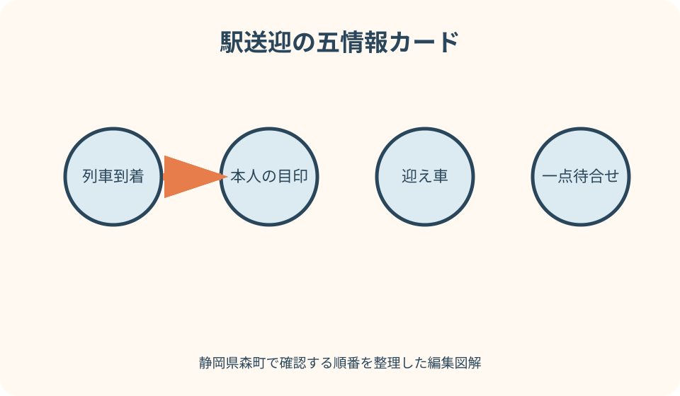
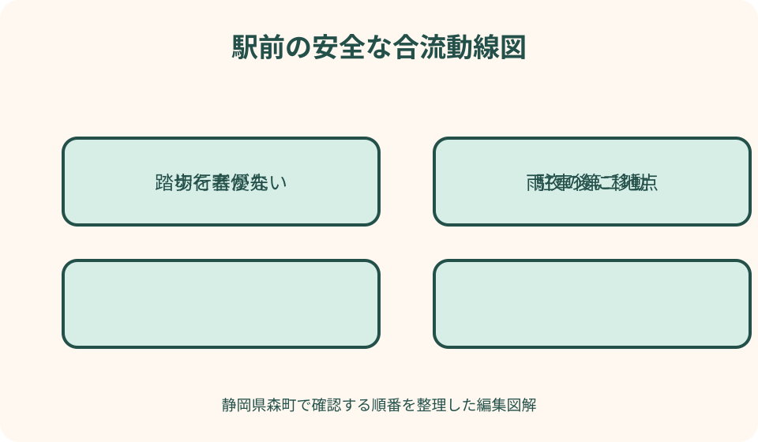

交通・外出・生活動線｜最終確認 2026-08-10
静岡県森町の駅で家族を送迎｜遅延・待合せ・雨夜の帰路を決める
駅送迎で難しいのは、時刻表どおりに車を着けることではなく、列車が遅れたときも歩行者や他の送迎車を妨げずに合流し、連絡できない場合にも本人が帰路を選べることです。静岡県森町には天浜線の駅が複数あり、有人・無人、設備、周辺道路は駅ごとに違います。利用駅の公式情報と当日運行を確認し、停車と駐車を分け、雨夜・通信切れ・迎え手の遅れまで一枚の約束にします。

編集イラスト送迎計画を五つの情報へ分ける
第一は列車です。利用日、駅名、方向、列車の到着予定を天浜線公式で確認します。家族が送った検索画面だけでなく、当日の運行情報へ戻ります。
第二は人です。降りる本人の服装、荷物、歩行の支援、スマートフォンの電池を確認し、車を探して道路へ出ない約束をします。
第三は車です。運転者、車種、色、番号、到着できる時間幅を共有します。普段と違う車なら当日に知らせます。
第四は場所、第五は代案です。待合せ一点と、連絡が取れない場合の待機・帰路を決め、口頭だけでなく短いメモにします。
町内の駅を同じ構造と思わない
森町内には戸綿、遠州森、森町病院前、円田、遠江一宮などの天浜線駅があります。駅員、トイレ、電話、乗換え案内などの設備は駅ごとに異なります。
遠州森駅の公式情報には駅設備や営業時間が掲載されています。有人時間が案内されても、終日必ず駅員へ相談できるとは限らないため、利用時刻と照合します。
森町病院前駅は無人駅と案内され、病院側でバス・タクシーへ乗換え可能という情報があります。駅前に一般的なタクシー乗り場があると読み替えません。
初めての駅では昼間に下見し、ホームから出る方向、道路横断、車を安全に待てる場所を確認します。別駅の送迎経験をそのまま当てはめません。
列車時刻と実際の到着を分ける
時刻表は計画の基準ですが、天候、設備、接続などで到着が変わる場合があります。迎え手は予定時刻だけで発着済みと判断しません。
天浜線は公式の運行情報ページを設け、一定規模以上の遅れを案内する考え方を示しています。情報掲載がないことを定刻保証とは扱いません。
乗車する本人は、出発駅で列車に乗った時点、必要なら乗換え後に短い連絡をします。運転者は運転中に画面を見ず、安全な場所で確認します。
遅延が長い場合は、迎え車が駅前で待ち続けず、駐車可能な場所へ移るか、自宅出発を遅らせます。停車帯の占有を待機方法にしません。
待合せ地点を一点で言えるようにする
『駅前』では、駅舎前、道路側、反対側、駐車場入口など解釈が分かれます。昼間の写真または簡単な図で、車外に立つ一点を決めます。
ホームや線路内、車道、駐車場の走行部分を待合せ地点にしません。雨天でも見通せ、他の利用者の通路を塞がない場所を選びます。
本人が幼い、歩行に不安がある場合は、運転者が車を適切に駐車して指定地点まで迎えに行く方法を検討します。車を離れられる場所か先に確認します。
駅名ネーミングライツ等で案内表示が変わる場合もあるため、愛称だけで共有せず、天浜線の正式駅名と住所を併記します。

停車と駐車を使い分ける
人を乗せる短時間の停車と、列車到着まで車内で待つ駐車は同じではありません。道路標識、路面表示、施設案内を見て、許される場所と方法を確認します。
ハザードランプを点ければ路上で待ってよいとは限りません。交差点、横断歩道、踏切、出入口、バス停付近を避け、法令と現地表示に従います。
駐車場が近くに見えても、鉄道利用者向けか、施設利用者専用か、時間制限があるかを確認します。空きや無料利用を保証しません。
駅前が混んでいる場合は、一周して戻るより、事前に決めた第二待合せ場所へ移ります。生活道路や私有地へ入り込む代案は選びません。
歩行者と自転車の動線を空ける
列車到着後は複数の利用者が一度に駅から出ます。迎え車は駅舎出口へ近づきすぎず、歩行者が道路を横断する可能性を見込んで速度を落とします。
朝夕の遠州森駅周辺は学生の利用も案内されています。人の流れを横切って転回したり、後続車を急に止めたりしない進入経路を下見します。
自転車利用者が駅から出るとき、車の陰で見えにくくなる場合があります。乗車中の家族だけを探さず、左右と後方を確認してからドアを開けます。
道路側のドアから荷物を積む時間を短くし、可能なら歩道側で乗降します。チャイルドシートや車いす等の準備が必要なら駐車できる場所を使います。
踏切と駅前道路で無理に転回しない
駅に近い踏切では、遮断機が下りると車列ができ、歩行者も集中します。踏切直前で家族を見つけても停車せず、決めた場所へ進みます。
狭い駅前道路で切り返すと、側溝、塀、自転車、後続車への注意が分散します。事前に一方向で出られる経路を確認します。
列車が到着したから踏切を急いで渡るという判断をしません。本人には、迎え車が遅れても駅から道路へ探しに出ないよう伝えます。
工事や行事で経路が変わる場合は、町の道路・交通情報と現地表示を確認します。過去の送迎ルートを当日も通れるとは決めません。
連絡不能時の十五分ルールを家族で作る
通信障害、電池切れ、マナーモード、列車内の混雑で連絡できないことがあります。連絡不能になってから行動を考えず、待機時間の上限を事前に決めます。
たとえば本人は指定地点で一定時間待ち、その後は駅の安全な待合場所へ戻る、迎え手は駐車場所から同じ地点へ確認に行くという順を決めます。
十五分という時間は一例であり、駅設備、年齢、天候、最終列車によって変えます。本人が一人で待てない場合は、別の見守り方法を用意します。
迎え手が事故や渋滞で遅れる場合の第二連絡者を決めます。家族全員へ一斉連絡して指示が競合しないよう、判断担当を一人にします。
雨天は傘と乗降位置を変える
雨の日は駅出口へ車を寄せたくなりますが、他の利用者も同じ行動をします。通常より早く駐車場所へ入り、到着連絡後に合流します。
傘を差す歩行者は車を見つけにくく、車側からも顔や進行方向が見えにくくなります。横断部分へ車を進めず、歩行者が通過してから乗降します。
荷物を積む間に本人を車道側へ立たせません。濡れた路面、側溝、ドア周辺の水たまりを下見し、乗降に時間が掛かる場合は駐車場所を使います。
大雨や道路規制があるときは送迎車の運転自体を再検討します。列車が動いていても駅まで安全に行けるとは限らず、別駅や運行再開後の帰路を確認します。
夜間は車と人の見つけ方を決める
暗い駅では車種や人の服装を見分けにくくなります。車は通常の灯火を適切に使い、指定地点で本人が運転者を確認してから近づきます。
本人は明るい服装や反射材を補助にしますが、車道へ出て存在を示しません。運転者も本人だけでなく周囲の歩行者を確認します。
車内灯やスマートフォンの点滅を合図にすると、別の車と混同する可能性があります。車の色、番号末尾、待合せ地点を主な識別情報にします。
最終列車付近では迎え不成立後の選択が少なくなります。タクシー、別の家族、駅で待てる時間を昼間に確認し、夜に初めて探しません。
子ども・高齢者の送迎は役割を具体化する
子どもには、列車を降りたら指定地点へ行き、迎え車が見えなくても駅から離れない約束を、実際の駅で確認します。
高齢者には、ホーム段差、駅出口、荷物、雨天歩行を確認します。迎えがあれば駅設備を問題なく使えるとは限らず、必要な支援を鉄道会社へ相談します。
運転者は本人を見つける役と車を安全に扱う役を同時に無理に行いません。見つからない場合はまず駐車し、周囲を確認してから車外へ出ます。
本人が予定と違う駅で降りた場合の連絡方法も決めます。線路沿いに歩いて移動せず、駅の安全な場所で鉄道会社や家族へ連絡します。

迎えが成立しない場合の帰路
第一候補は駅で安全に待つことです。駅員の有無、営業時間、待合場所、トイレ、電話は駅別公式情報で確認します。
第二は次の列車や接続交通で別駅へ移動する方法です。最終列車や運賃、迎え手が別駅へ行けるかを確認し、本人だけで即決しません。
第三はタクシー、第四は別の家族です。森町病院前駅のように駅から離れた場所で乗換え案内がある例もあり、駅前配車を当然と考えません。
徒歩帰宅は距離が短く見えても、夜、雨、荷物、歩道で条件が変わります。事前に実測していない経路を緊急代案にしません。
良い点
天浜線公式には駅別設備、時刻表、運行情報があり、森町内でも駅ごとの違いを確認できます。送迎計画を駅名だけで作らずに済みます。
待合せ地点を一点へ絞ると、車が駅周辺を回り続け、本人が車道へ探しに出る動きを減らせます。
到着連絡後に駐車場所から動く方式は、列車遅延による長時間の路上待機を避ける助けになります。
連絡不能時の順を紙にしておけば、電池切れでも本人と迎え手が同じ行動を取りやすくなります。
注文したい点
駅別ページに、送迎車が利用できる駐車・乗降場所と歩行者動線を明示した図があると、初めての家族が下見しやすくなります。
無人駅では連絡不能時の相談先が分かりにくいため、駅掲示と公式ページで緊急時の連絡方法が目立つことを期待します。
町内各駅の雨天・夜間設備、バス・タクシー接続を一枚で比較できれば、家族は利用者に合う駅を選びやすくなります。
工事や行事で駅前通行が変わる場合、天浜線と森町の双方から仮乗降場所へ案内されると、生活道路への流入を減らせます。
代案・結論
駅前が混雑していれば、無理に進入せず第二待合せ場所へ移ります。路上、踏切、横断歩道、私有地を待機場所にしません。
列車が遅れたら運行情報を確認し、迎え車は駐車可能な場所で待つか出発を遅らせます。小さな遅れも想定します。
連絡できなければ本人は指定地点、駅内待機、代替帰路の順、迎え手は駐車、地点確認、第二連絡者の順で行動します。
結論は、列車、本人、車、場所、代案を分け、雨夜と通信切れで試すことです。安全や合流成立を保証せず、無理なら送迎を中止します。
大石の視点
森町で住まいを考えると、駅が近いことと家族送迎がしやすいことは同じではありません。駅前道路、転回、待合せ、夜の歩行まで現地で見ます。
通学送迎が毎日必要な家では、家から駅の距離だけでなく、迎え手の待機時間と列車遅延が家族の固定負担になります。
送迎が難しいからとすぐ転居を考える前に、利用駅、時間帯、駐車、タクシー、別駅接続を試し、何が成立しないかを具体化します。
よい送迎は最短で駅前へ着くことではなく、歩行者を妨げず、家族が連絡できない日にも無理な行動をしない仕組みです。
家族送迎カードの完成形
表面に正式駅名、列車方向、予定到着、当日運行URL、待合せ一点、車の識別情報を書きます。
裏面に連絡不能時の待機時間、第二連絡者、タクシー、別駅、徒歩不可の条件を記載します。
運転者側には駐車候補、進入方向、歩行者横断、踏切、雨天の第二場所を記します。路上待機を候補に入れません。
カードは駅、車、季節、利用者が変わるたび更新します。時刻表と運行状況を毎回確認し、古いカードを安全保証にしません。
初回は昼間に空車で下見する
初めての駅へ迎えに行く前に、列車到着のない昼間を選び、車で進入・駐車・退出を試します。ナビの到着地点が実際の駅入口や駐車候補と一致するかを確認します。
下見では、対向車とすれ違える幅、側溝、低い縁石、転回が必要な場所、踏切待ちによる車列を見ます。運転者だけでなく、可能なら家族が助手席から歩行者動線を記録します。
車を適切に置いた後、運転席から待合せ地点まで実際に歩きます。鍵、貴重品、子どもの車内待機をどうするかも決め、短時間でも危険な置き方を前提にしません。
下見時に空いていても、朝夕、通学、イベント、雨天では混雑します。空いていた場所を専用送迎帯と思わず、現地表示と管理者の案内を優先します。
行事・観光期の混雑を別計画にする
森のまつり、文化会館の催し、花の見頃など、駅周辺や町内道路へ人と車が増える日は平日の送迎計画を使えない場合があります。町と鉄道の当年案内を確認します。
臨時列車が設定される場合は、通常時刻表と混同せず、対象日、方向、停車駅を公式発表で見ます。列車が増えても駅前の乗降空間が広がるわけではありません。
交通規制がある日は、駅前へ車で近づけない可能性があります。規制区域外の待合せ、公共交通による帰宅、送迎中止を事前に選び、規制線の近くで停車しません。
観光客が多い日は、家族が車を見つけにくくなります。車両情報と一点待合せを変えず、混雑で接近できない場合の第二地点を徒歩で安全に移動できる範囲に置きます。
送迎車側の出発前点検
迎え手は燃料、灯火、タイヤ、窓の曇り、チャイルドシート、荷室を確認します。本人の荷物が大きい場合は、駅前で積み替えに手間取らないよう空間を先に作ります。
スマートフォンは運行情報と連絡に使いますが、運転中に操作しません。端末固定や音声操作を過信せず、確認が必要なら駐車できる場所へ入ります。
迎え手自身が疲労、眠気、体調不良の場合は送迎担当を変更します。終列車だから無理をして運転する計画にせず、本人の代替帰路と同時に第二運転者を決めます。
雨夜はフロントガラスの視界、対向車の光、濡れた歩行者の見え方が変わります。到着を急がず、本人には遅れの可能性と駅での待機順を早めに伝え、出発前に互いに声を出して復唱します。
公式情報・確認先
掲載内容は次の一次情報を基礎に整理しました。営業、料金、催し、交通は変わるため、出発前または手続き前にリンク先で最新情報を確認してください。